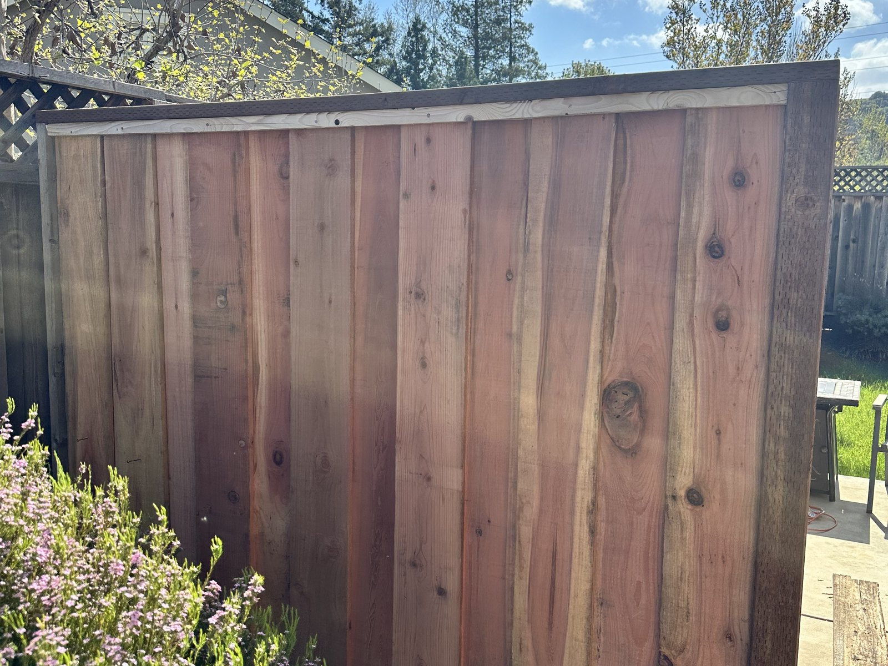
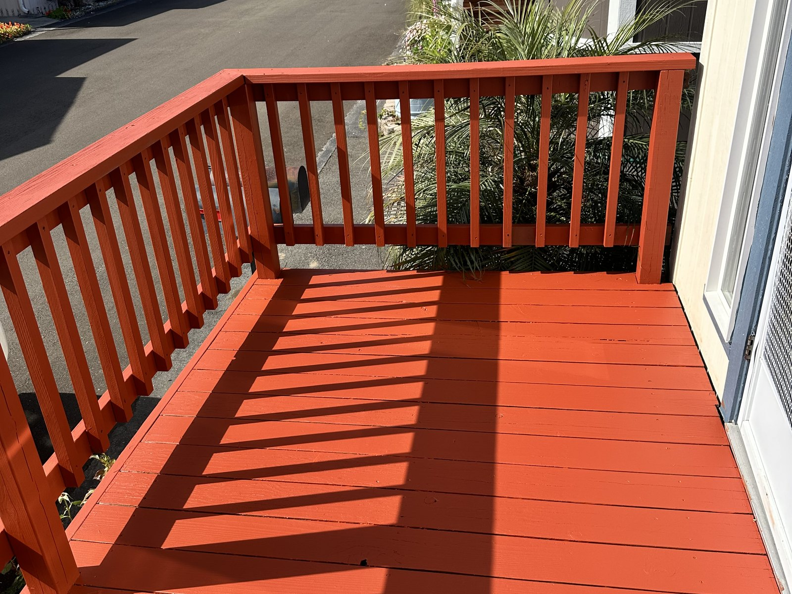

Project 01
Fence and gate installation
A strong exterior project image with clear craftsmanship, warm materials, and an obvious finished result that reads well on a service website.
Portfolio + reviews
Recent before-and-after boards give the site real proof-of-work from Big Iron jobs instead of generic contractor placeholders.

Project 01
A strong exterior project image with clear craftsmanship, warm materials, and an obvious finished result that reads well on a service website.

Project 02
A stronger in-the-field image for the portfolio mix because it shows a real crew member on the roof during live exterior work instead of another collage board.

Project 03
A clean finished-job photo that adds color, contrast, and a polished completed-project look to the portfolio section.
“Derek and Danny were awesome. Super communicative, easy to schedule with, and the work came out clean and solid. Would absolutely hire them again.”
Sophia T. Portola Valley“They helped us repair exterior wood trim and a gate that was starting to sag. Everything looks tighter now and it finally closes the way it should.”
Daniel K. Menlo Park“We had a weird list of small repairs, and they handled all of it without making it feel like a hassle. Good communication, good workmanship, great experience overall.”
Maya C. Saratoga“It is hard to find residential work that actually feels professional from start to finish, but these guys delivered. On time, experienced, and very easy to trust in our home.”
Owen P. Los Altos HillsNext step